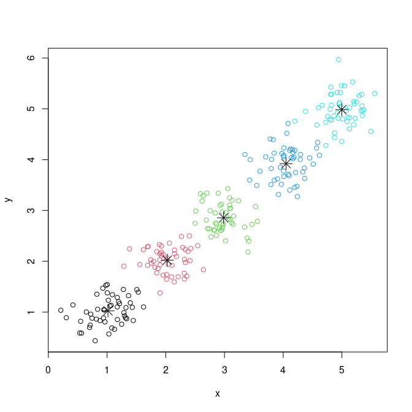

This package provides R binding to a cpp implementation of kmeans++ algorithm (https://en.wikipedia.org/wiki/K-means%2B%2B).
Installation
You can install the released version of tglkmeans using the following command:
install.packages('tglkmeans', repos=c(getOption('repos'), 'https://tanaylab.github.io/repo'))Or install the development version using:
if (!require("remotes")) install.packages("remotes")
remotes::install_github("tanaylab/tglkmeans")Basic usage
library(tglkmeans)Create 5 clusters normally distributed around 1 to 5, with sd of 0.3:
data <- rbind(matrix(rnorm(100, mean = 1, sd = 0.3), ncol = 2),
matrix(rnorm(100, mean = 2, sd = 0.3), ncol = 2),
matrix(rnorm(100, mean = 3, sd = 0.3), ncol = 2),
matrix(rnorm(100, mean = 4, sd = 0.3), ncol = 2),
matrix(rnorm(100, mean = 5, sd = 0.3), ncol = 2))
colnames(data) <- c("x", "y")
head(data)
#> x y
#> [1,] 0.6296324 1.3205426
#> [2,] 1.2610985 1.5273401
#> [3,] 0.8884797 0.8628733
#> [4,] 1.1209760 1.0527145
#> [5,] 1.0462635 1.3464143
#> [6,] 1.1329243 0.7410431Cluster using kmeans++:
km <- TGL_kmeans(data, k=5, id_column = FALSE)
km
#> $cluster
#> 1 2 3 4 5 6 7 8 9 10 11 12 13 14 15 16 17 18
#> 2 2 2 2 2 2 2 2 2 2 2 2 2 2 2 2 2 2
#> 19 20 21 22 23 24 25 26 27 28 29 30 31 32 33 34 35 36
#> 2 2 2 2 2 2 2 2 2 2 2 2 2 2 2 2 2 2
#> 37 38 39 40 41 42 43 44 45 46 47 48 49 50 51 52 53 54
#> 2 2 2 2 2 2 2 2 2 2 2 2 2 2 5 5 5 5
#> 55 56 57 58 59 60 61 62 63 64 65 66 67 68 69 70 71 72
#> 5 5 5 5 5 5 5 5 5 5 5 5 5 5 5 5 5 5
#> 73 74 75 76 77 78 79 80 81 82 83 84 85 86 87 88 89 90
#> 5 5 5 5 5 5 5 5 5 5 5 5 5 5 5 5 5 5
#> 91 92 93 94 95 96 97 98 99 100 101 102 103 104 105 106 107 108
#> 5 5 5 5 5 5 5 5 5 5 1 1 1 1 1 1 1 1
#> 109 110 111 112 113 114 115 116 117 118 119 120 121 122 123 124 125 126
#> 1 1 1 1 1 1 1 1 1 1 1 1 1 1 1 1 1 1
#> 127 128 129 130 131 132 133 134 135 136 137 138 139 140 141 142 143 144
#> 1 1 1 1 1 1 1 1 1 1 1 1 1 1 1 1 1 1
#> 145 146 147 148 149 150 151 152 153 154 155 156 157 158 159 160 161 162
#> 1 1 1 1 1 1 3 3 3 3 3 3 3 3 3 3 3 3
#> 163 164 165 166 167 168 169 170 171 172 173 174 175 176 177 178 179 180
#> 3 3 3 3 3 3 3 3 3 3 3 3 3 3 3 3 3 3
#> 181 182 183 184 185 186 187 188 189 190 191 192 193 194 195 196 197 198
#> 3 3 3 3 3 3 3 3 3 3 3 3 3 3 3 3 3 3
#> 199 200 201 202 203 204 205 206 207 208 209 210 211 212 213 214 215 216
#> 3 3 4 4 4 4 4 4 4 4 4 4 4 4 4 4 4 4
#> 217 218 219 220 221 222 223 224 225 226 227 228 229 230 231 232 233 234
#> 4 4 4 4 4 4 4 4 4 4 4 4 4 4 4 4 4 4
#> 235 236 237 238 239 240 241 242 243 244 245 246 247 248 249 250
#> 4 4 4 4 4 4 4 4 4 4 4 4 4 4 4 4
#>
#> $centers
#> x y
#> [1,] 3.036523 3.026682
#> [2,] 1.068704 1.058818
#> [3,] 3.983119 4.010461
#> [4,] 4.892897 5.056413
#> [5,] 1.989767 2.019150
#>
#> $size
#> 1 2 3 4 5
#> 50 50 50 50 50Plot the results:

Vignette
Please refer to the package vignettes for usage and workflow, or look at the usage section in the site.
browseVignettes('usage')